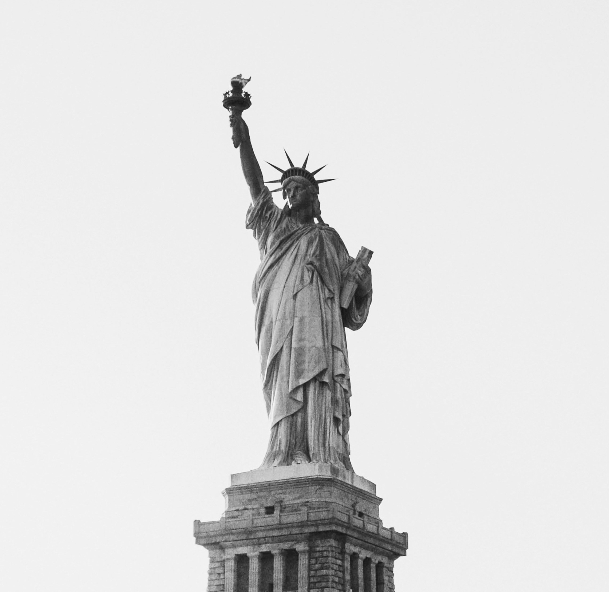

Top three activities to do at New York City
Top of the rock
See the best NYC view from 70 floors up at indoor and outdoor observation decks.

Statue of Liberty
The Statue of Liberty is a colossal neoclassical sculpture on Liberty Island in New York Harbor, within New York City. Height of copper statue (to torch) is 151 feet 1 inch (46 meters).

Times Square
Times Square is a major commercial intersection, tourist destination, entertainment hub, and neighborhood in the Midtown Manhattan section of New York City.